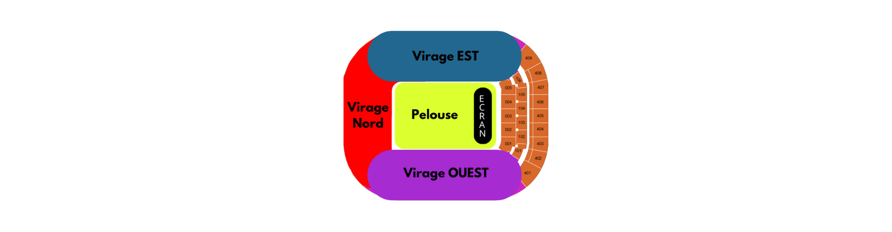

FAN ZONE : Finale d'UWCL OL / FC Barcelone et Finale de Coupe de France OL / PSG
Rejoignez-nous au Groupama Stadium pour une journée inoubliable le 1er juin 2024 ! Vivez l'émotion de la finale d'UWCL opposant l'Olympique Lyonnais au FC Barcelone, suivie de la finale de la Coupe de France entre l'OL et le PSG.
BILLETERIE
Vente de billets en ligneHoraires de l'événement :
- 08h00 : Ouverture OL Vallée
- 16h30 : Ouverture du parking relais Meyzieu les Panettes avec liaison vers le stade via la ligne T3, arrêt Décines Grand Large
- 17h00 : Ouverture des parkings
- 17h15 : Ouverture du podium
- 17h30 : Ouverture des portes
- 18h00 : Coup d’envoi de la finale d’UWCL OL / FC Barcelone
- 18h30 : 1ᵉʳ départ des navettes depuis Panettes, Part-Dieu Villette Sud et Vaulx-la-Soie
- 21h00 : Coup d’envoi de la finale de Coupe de France OL / PSG
- 00h15 : Dernier départ des navettes bus et tramways
- 01h00 : Fermeture du parking relais Meyzieu les Panettes
Accès : Navettes disponibles depuis Panettes, Part-Dieu Villette Sud et Vaulx-la-Soie.
Possibilité de manger sur place.